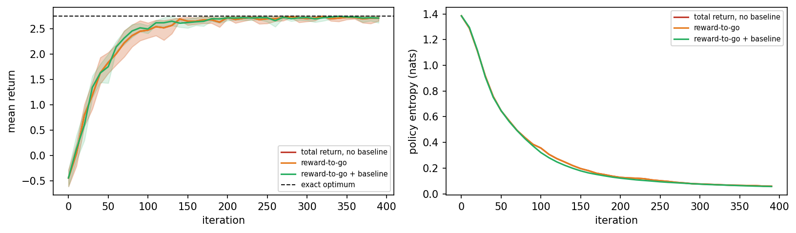
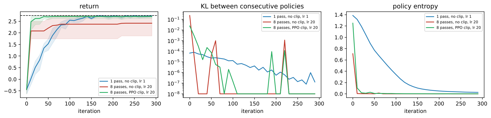
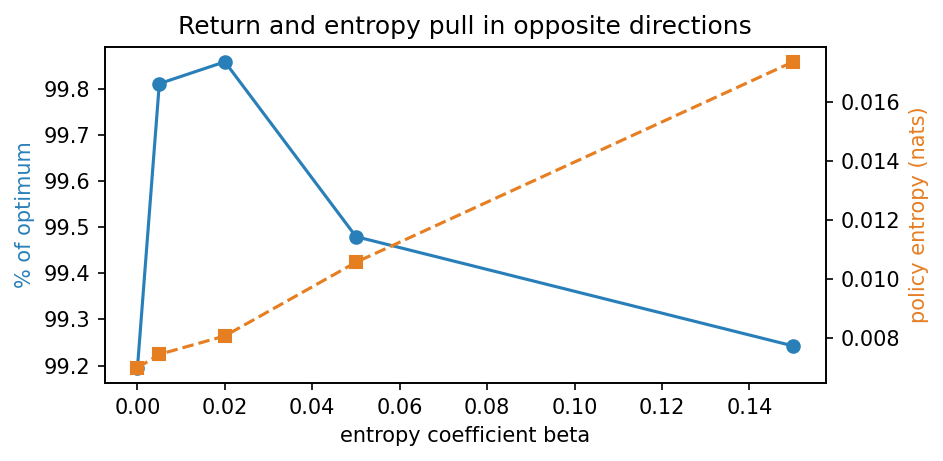
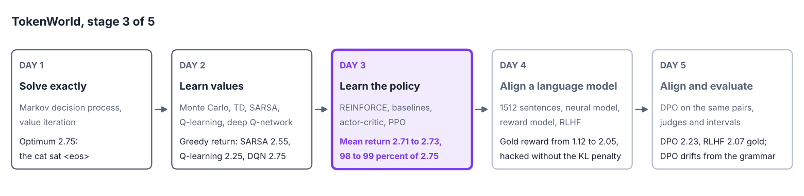
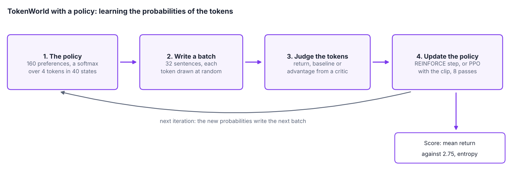

Overview
Value-based methods learn values and derive a policy from them. Policy gradient methods change the policy directly, in the direction that increases the expected return [1, 2]. This is the family used to train language models with human feedback on Day 4. This day derives REINFORCE, the basic algorithm of the family, measures how noisy its estimates are and reduces the noise with a baseline. It introduces actor-critic methods with generalised advantage estimation [3, 4], and limits the size of each update with the clipped objective of proximal policy optimisation, abbreviated PPO [5]. It ends with entropy, the measure of how much a policy still explores, and a metric that hides its collapse.
Day at a glance
flowchart LR A["Why optimise the policy?"] --> B["REINFORCE"] B --> C["Variance and baselines"] C --> D["Actor-critic"] D --> E["PPO"] E --> F["Entropy"] F --> S["TokenWorld, stage 3"] S --> G["Your field"]
Every method on this page is also written as Python code in the Colab notebook of the day. A Colab notebook is a document of text and Python code that runs in the web browser, with nothing to install. Its code is divided into numbered sections. Each orange box on this page names the section whose code carries out what the text above the box explains. The box says what to run and what to look at in that section, and its button opens the notebook at that place. The practice parts and the self-assessment of the day are in the interactive lab.
Python step 3: Vectors, the softmax and learning curves
Python code in the Colab notebook, right after Section 0 (setup). Open the notebook and run this step cell by cell: It consists of short pieces of Python code with their explanations, a quick check and three exercises. Topics: Preferences and the softmax · The gradient of a log-probability · REINFORCE on a bandit, with and without a baseline · A learning curve.
The notebook continues with the hands-on sections. The study path, the daily task and the research assignment are on the day overview.
Why optimise the policy directly?
Day 1 described TokenWorld, the project of the course, and solved it exactly: The best sentence, the cat sat <eos>, earns 2.75. Day 2 took the rules away and learned from experience. Monte Carlo and temporal difference learning estimated the values of a fixed policy, SARSA (state, action, reward, state, action) and Q-learning learned a table of 160 action values and wrote the best sentence in some of their runs, and a deep Q-network replaced the table by a neural network.
This day keeps TokenWorld as it is and changes what is learned. Instead of values from which a policy is derived, the agent learns the probabilities of its tokens directly, as a language model does. The methods of the day, from REINFORCE to proximal policy optimisation, are those that align the language model of Day 4, and on TokenWorld each of them is measured against the optimum of Day 1.
A policy can be written as a function with parameters that gives a probability to every action, for example a softmax over scores. Changing the parameters changes the behaviour smoothly, which suits continuous actions and stochastic policies, and it is the natural form of a language model, which already outputs a probability for every next word. The question is in which direction to change the parameters to collect more reward.
A stochastic policy draws its action at random with the probabilities that it assigns, while a deterministic policy always takes the same action in a state. The greedy policy of the value-based methods of Day 2 is deterministic, and its exploration is added from outside. The randomness of a policy with parameters is its exploration. A continuous action is a number from a range, such as a steering angle, so there are infinitely many actions. A value-based agent would have to find the best of them before every step. A policy with parameters describes a distribution over the actions and draws one from it, which also suits very large sets of actions, such as the vocabulary of a language model. Smoothly means that a small change of the parameters changes every probability a little, whereas a small change of one action value can make a greedy policy jump to another action.
The project uses the simplest policy of this kind on TokenWorld, a table with a softmax. The parameters are written with the Greek letter theta, \(\theta\). The policy that they define is written \(\pi_\theta(a \mid s)\), as on Day 1, with the parameters as its index. The table holds one parameter \(\theta_{s,a}\) for every pair of a state \(s\) and an action \(a\), called a preference, or a logit in the vocabulary of neural networks. The softmax function turns the preferences of a state into probabilities:
→ This formula with numbers, step by step: Lab Part A, steps 1 to 3 and 8 to 10.
Here \(e \approx 2.718\) is the base of the natural logarithm, and the sum runs over all actions \(b\) of the state. The exponential makes every term positive, and the division makes the probabilities of a state add up to 1. Adding the same number to all preferences of a state changes nothing. In TokenWorld the agent chooses a token in 40 of the 161 states, the unfinished sentences, so the table holds \(40 \times 4 = 160\) parameters. All start at zero, which gives every token the probability \(1/4\): the random policy of Day 1.
A beginner at darts does not know which movement of the arm hits the centre. After a throw that scores well, the beginner repeats that movement a little more often, and after a poor throw a little less often. REINFORCE does exactly this with the probabilities of its actions: Actions that were followed by a high return become more likely, in proportion to the return.
A state has the preferences 2, 1, 0 and 0 for its four actions. The exponentials are \(e^2 = 7.39\), \(e^1 = 2.72\), \(e^0 = 1\) and \(e^0 = 1\), and their sum is \(7.39 + 2.72 + 1 + 1\)\({} = 12.11\). The probabilities are \(7.39 / 12.11 = 0.61\), \(2.72 / 12.11 = 0.22\), and \(1 / 12.11 = 0.08\) for each of the last two actions.
Raising the first preference from 2 to 2.1 changes its exponential to \(e^{2.1} = 8.17\) and the sum to \(8.17 + 2.72 + 1 + 1\)\({} = 12.89\). The probabilities become \(8.17 / 12.89 = 0.63\), \(2.72 / 12.89 = 0.21\), and \(1 / 12.89 = 0.08\) for each of the last two: A small change of one parameter moves every probability a little.
The quality of a policy is one number, the return that it collects on average over an episode, called the objective \(J(\theta)\). Gradient ascent improves it step by step:
In the first line, \(G_0\) is the return of an episode from its first step, and \(\mathbb{E}\) is the expectation: the average over all episodes that the policy can produce, each weighted by its probability. The random policy of TokenWorld has \(J = -0.49\), and no policy exceeds the exact optimum of Day 1, 2.75. In the second line, the gradient \(\nabla_\theta J(\theta)\), written with the symbol nabla, is the vector of the slopes of \(J\) with respect to all parameters, the direction in which \(J\) grows fastest. The arrow reads is replaced by, and the learning rate \(\alpha\) sets the size of the step. The open question is how to obtain the gradient: The agent knows only the episodes that it has played.
REINFORCE
The policy gradient theorem answers it [2]. Its core is one step of calculus, shown here for a single decision, as in the bandit of Day 1, where action \(a\) earns on average the reward \(\mu_a\). The objective is the average reward of each action, weighted by the probability \(\pi_\theta(a)\) of the action:
The gradient of \(J\) is the sum of the terms \(\nabla_\theta \pi_\theta(a)\, \mu_a\). This sum needs the average reward of every action, also of those that the policy almost never takes, so it cannot be estimated by letting the policy act. A rule of calculus helps: The slope of \(\log f\) is the slope of \(f\) divided by \(f\). Here \(\log\) is the natural logarithm, the \(\ln\) of Day 1. Therefore \(\nabla_\theta \pi_\theta(a) = \pi_\theta(a)\, \nabla_\theta \log \pi_\theta(a)\), and the sum becomes an average over the actions that the policy itself chooses:
The index \(a \sim \pi_\theta\) reads: The action is drawn from the policy, and \(r\) is the reward that it then receives. Such an average can be estimated from samples: Act, observe the reward, and multiply it by the gradient of the logarithm of the probability of the action taken. The logarithm of a probability is called a log-probability, and its gradient is the score function. The rewriting is the score-function identity, also called the log-derivative trick.
For a whole episode, the same step is applied to the probability of the episode, a product of the probabilities of its actions and its transitions. The logarithm turns the product into a sum, and the transitions do not depend on \(\theta\), so only the log-probabilities of the actions remain. An action cannot change the rewards that came before it, and their contribution is zero on average. Each log-probability is therefore multiplied by \(G_t\), the return that followed its action:
The sum runs over the steps \(t\) of an episode, and the expectation over the episodes of the current policy. REINFORCE turns the answer into an algorithm [1]: Play an episode, and for every action taken, push its log-probability up in proportion to the return that followed. Actions followed by high returns become more likely, actions followed by low returns less likely. The name is an acronym of the form of the update: REward Increment = Nonnegative Factor times Offset Reinforcement times Characteristic Eligibility. In the words of this day, the three factors are the learning rate, the return minus a baseline, and the gradient of the log-probability. The baseline belongs to the next section and is zero for now. In practice the expectation is replaced by the average over a batch of \(B\) episodes. This gives the estimate of the gradient, written \(\hat{g}\) with a hat, and the update:
→ These formulas with numbers, step by step: Lab Part A, steps 5 to 7.
The index \((i)\) numbers the episodes of the batch, and one round of playing a batch and updating is called an iteration. On TokenWorld, REINFORCE starts with all parameters at zero and runs 400 iterations with \(B = 32\) and \(\alpha = 0.35\). TokenWorld is not discounted, so the discount factor \(\gamma\) is 1. It pays its only reward at the end, so \(G_t\) is the reward of the finished sentence at every step. For the softmax policy, the gradient of a log-probability involves only the preferences of the visited state \(s\). Its slope with respect to the preference of an action \(b\) is
→ This formula with numbers, step by step: Lab Part A, step 4.
The symbol \(\partial\) marks a slope with respect to one parameter while the others are held fixed. Put together, the gradient is a vector with a 1 at the position of the action taken and 0 elsewhere, called a one-hot vector, minus the vector of the probabilities. A positive return therefore raises the preference of the action taken and lowers the others, and a negative return does the opposite.
A state has three actions with the preferences 0.916, 0.405 and 0. The agent takes the second action, the return that follows is \(G_t = 2\), and the learning rate is \(\alpha = 0.1\). The table follows the update from the old preferences to the new probabilities. Every value is rounded to three decimals, and each row continues with the rounded values of the rows above it.
The first three rows are the softmax of the old preferences. The exponentials add up to \(2.499 + 1.499 + 1.000\)\({} = 4.998\), and each probability is its exponential divided by 4.998, for example \(1.499 / 4.998 = 0.300\). The gradient of the log-probability is the one-hot vector \((0, 1, 0)\) minus the probabilities. The size of the step is \(\alpha G_t = 0.1 \times 2 = 0.2\), so the change of each preference is 0.2 times its gradient, for example \(0.2 \times 0.700 = 0.140\). The new preferences are the old ones plus the change, and the softmax of the new preferences gives the new probabilities, with the sum \(2.261 + 1.725 + 0.961\)\({} = 4.947\).
| Quantity | How it is computed | Action 1 | Action 2, taken | Action 3 |
|---|---|---|---|---|
| Preference \(\theta\) | given | 0.916 | 0.405 | 0.000 |
| Exponential \(e^{\theta}\) | \(e\) to the power \(\theta\) | 2.499 | 1.499 | 1.000 |
| Probability \(\pi\) | exponential divided by 4.998 | 0.500 | 0.300 | 0.200 |
| One-hot vector | 1 for the action taken | 0 | 1 | 0 |
| Gradient of \(\log \pi\) | one-hot minus probability | \(-0.500\) | 0.700 | \(-0.200\) |
| Change \(\Delta\theta\) | \(0.2\) times the gradient | \(-0.100\) | 0.140 | \(-0.040\) |
| New preference \(\theta'\) | \(\theta + \Delta\theta\) | 0.816 | 0.545 | \(-0.040\) |
| New exponential | \(e\) to the power \(\theta'\) | 2.261 | 1.725 | 0.961 |
| New probability \(\pi'\) | new exponential divided by 4.947 | 0.457 | 0.349 | 0.194 |
The action taken has become more likely, 0.349 instead of 0.300, and the other two have lost. With a return of \(-2\) the step has the opposite sign: The change is \(-0.2\) times the gradient, \((0.100, -0.140, 0.040)\), the new preferences are \((1.016, 0.265, 0.040)\) with the exponentials 2.762, 1.303 and 1.041 and the sum 5.106, and the probability of the action taken falls to \(1.303 / 5.106 = 0.255\).
Interactive lab, Part A. The same update with sliders for the three preferences, the action taken, the return and the learning rate. Each row of the table becomes one step, three steps ask for the value first, and a figure compares the probabilities before and after the update.
The estimate is unbiased, but it is noisy, because one episode's return reflects many random choices, as the animation shows. Unbiased means that the average of many such estimates is the true gradient, and noisy that a single one can lie far from it. The animation applies the update to a bandit with three arms that pay a reward of 1 with the probabilities 0.2, 0.8 and 0.5, where every pull is an episode of one step. With the settings shown at the start, a learning rate of 0.1 and a baseline, the probability of the best arm climbs steadily to 0.96 after 600 pulls. With a learning rate of 1 and without the baseline, a few early rewards first drive the probability of the arm with 0.5 up to 0.97. The policy then needs about 100 pulls to turn to the best arm.
Animation. REINFORCE on a bandit with three arms that pay with the probabilities 0.2, 0.8 and 0.5. The thick line is the probability of the best arm. Switch the baseline off and raise the learning rate to see the noise of the updates. The entropy in the readout is explained in the section on entropy.
Check your understanding. In REINFORCE, which actions become more likely?
Check your understanding. A softmax policy gives the three actions of a state the probabilities 0.6, 0.3 and 0.1. The second action is taken and is followed by a return of 4. With a learning rate of 0.1 and no baseline, how does REINFORCE change the preference of the second action?
Variance and baselines
The noise of an estimate is measured by its variance, the average squared distance of the estimate from its own mean. For a random number \(X\) it is
A variance of zero means that every repetition gives the same number, and the square root of the variance is the standard deviation. The mean of \(B\) independent estimates has the variance of one estimate divided by \(B\), so a larger batch is one remedy, paid for with more episodes. The two tricks of this section cost no additional episodes.
Subtracting a baseline from the return, for example the average return from that state, does not change the expected gradient but can reduce its variance considerably. The baseline is written \(b(s)\), and the policy gradient with a baseline is
The baseline may be any number that depends on the state but not on the action taken in it. It leaves the expectation unchanged, because in every state the gradients of the log-probabilities, weighted by the probabilities of their actions, add up to zero:
The first step is the score-function identity read backwards. The second uses that the probabilities of a state add up to 1 for every value of the parameters, and a constant has a slope of zero. A baseline multiplies this sum by \(b(s)\) and so adds nothing on average, but it changes the size of the single terms.
A state has two actions with a probability of 0.5 each. The first is always followed by a return of 9 and the second by a return of 11. The slope of the log-probability with respect to the preference of the first action is \(1 - 0.5 = 0.5\) when the first action is taken and \(-0.5\) when the second is taken.
Without a baseline, the estimate of the slope of \(J\) is \(9 \times 0.5 = 4.5\) in half of the cases and \(11 \times (-0.5) = -5.5\) in the other half. Its mean is \((4.5 - 5.5) / 2 = -0.5\). Both values lie 5 away from the mean, because \(4.5 - (-0.5) = 5\) and \(-5.5 - (-0.5) = -5\), so the variance is \((5^2 + 5^2) / 2 = 25\). With a baseline of 10, the average return of the state, the estimate is \((9 - 10) \times 0.5 = -0.5\) or \((11 - 10) \times (-0.5)\)\({} = -0.5\): the same mean, and a variance of zero.
A mark of 70 in an examination means little on its own. In a hard examination where most students score 50 it is good news, and in an easy one where most score 90 it is bad news. Judging the mark against the usual mark is what a baseline does with a return: It turns the return into the news of how much better or worse the episode went than usual.
The usual baseline is an estimate of the value of the state, \(b(s) = \hat{V}(s)\), so that \(G_t - \hat{V}(s_t)\) tells how much better the episode went than is usual from that state. Here the baseline is learned as a running average: After an episode, every visited state moves its baseline a fraction \(\alpha_b\) of the way towards the return that followed. The fraction is 0.05 in the variance measurement and 0.15 during training.
Scene: Three ways to throw. A robot throws at a hoop with one of three styles, which hit with the probabilities 0.2, 0.8 and 0.5, the bandit of the animation above. Its policy is a softmax over three preferences, and every throw is one episode of REINFORCE with the learning rate 0.4. With the baseline on, the reward is compared with the running average of the rewards, so a miss lowers the probability of its style. With the baseline off, a miss changes nothing, and every hit raises its style, good or not.
The second trick concerns the return itself. The policy gradient above multiplies each log-probability by \(G_t\), the rewards that come after the action, which is called the reward-to-go. A simpler estimator multiplies every step of an episode by the total return \(G_0\). The variance of these estimators can be measured directly. At the parameters of the random policy of TokenWorld, \(\hat{g}\) is computed sixty times from fresh episodes, the variance of each of the 160 components is taken over the sixty repetitions, and the 160 variances are averaged. The table shows this variance for three batch sizes.
| Estimator | \(B = 1\) | \(B = 8\) | \(B = 64\) |
|---|---|---|---|
| Total return, no baseline | 0.0217 | 0.00278 | 0.000425 |
| Reward-to-go, no baseline | 0.0217 | 0.00278 | 0.000425 |
| Reward-to-go with baseline | 0.0169 | 0.00217 | 0.000351 |
A baseline reduces it on TokenWorld, while another popular trick, using only the rewards that come after each action, changes nothing there, because the whole reward of TokenWorld arrives at the end. With a single reward at the end, \(G_t = G_0\) at every step, and the first two rows are the same estimator. The baseline lowers the variance by a factor of 1.2 to 1.3, and the batch lowers it roughly in proportion to \(1/B\): Dividing 0.0217 by 8 and by 64 gives 0.0027 and 0.00034. The last section of this lecture, Going further, pays rewards along the way, and there the reward-to-go does help. A trick is only as good as its fit to the problem.
Python code in the Colab notebook, Section 2. Open Section 2 of the Colab notebook and run it. The function reinforce_grad computes the estimate \(\hat{g}\) from one batch: Its option baseline subtracts a baseline, and use_rtg switches between the reward-to-go and the total return. The cell repeats the estimate sixty times for each batch size and prints the variances of the table above.
REINFORCE is trained on TokenWorld with each of the three estimators and the settings of the previous section, 400 iterations with \(B = 32\) and \(\alpha = 0.35\), eight times with different seeds of the random number generator. The figure shows the learning curves.

All three curves rise from about \(-0.44\), the return of the random policy in the first batches, to 2.71 after 400 iterations, which is 98.4 to 98.5 percent of the optimum. The curves of the total return and of the reward-to-go coincide exactly, as the variance table predicts. The baseline changes little: Its curve passes 90 percent of the optimum at iteration 90 instead of 110. The right panel explains the missing 1.5 percent. The entropy, the measure of the remaining randomness of a policy that a later section defines, falls from 1.39 to 0.06 but not to zero. In every seed the most likely sentence is the best one, the cat sat <eos>, and now and then the policy still draws another token.
Python code in the Colab notebook, Section 3. Open Section 3 of the Colab notebook and run it. The function train_reinforce contains the whole algorithm, and its line theta += lr * g is the update. The cell trains the three estimators over eight seeds, prints their final returns and draws the figure shown here.
Check your understanding. What does subtracting a baseline change in the policy gradient?
Actor-critic
An actor-critic method learns a value function, the critic, alongside the policy, the actor, and uses the critic to judge each action: The advantage tells how much better an action was than expected [4]. In the symbols of Days 1 and 2, the advantage of action \(a\) in state \(s\) under the policy \(\pi\) is
The action value \(Q^{\pi}(s, a)\) is the return expected after taking \(a\) in \(s\) and following the policy afterwards, and the state value \(V^{\pi}(s)\) is the return expected when the policy also chooses the first action. An estimate of the advantage of the action of step \(t\) is written \(\hat{A}_t\). The return minus the baseline, \(G_t - \hat{V}(s_t)\), is one such estimate, with the noise of the whole rest of the episode. The critic offers a second one that looks a single step ahead, the temporal difference (TD) error of Day 2:
→ This formula with numbers, step by step: Lab Part B, step 1.
The first two terms estimate the value of the action taken: the reward received plus the discounted value that the critic gives to the next state, which is zero after the end of the episode. This estimate contains the randomness of a single step, so its variance is low. While the values of the critic are wrong, however, it is wrong in the same direction every time, and such a systematic error is called a bias. The simplest actor-critic uses \(\delta_t\) after every step for both learners:
The first line is the TD learning of Day 2 with the step size \(\alpha_V\) of the critic, and the second is the REINFORCE update with \(\delta_t\) in place of the return. The gridworlds of the section Your field use this one-step actor-critic.
Generalised advantage estimation blends advantages over one step and over many steps with a parameter lambda [3]; small lambda trusts the critic more, large lambda trusts the observed returns more. The method is abbreviated GAE, and its parameter \(\lambda\), the Greek letter lambda, is a number between 0 and 1. The estimate adds up the TD errors of the following steps, and a TD error that lies \(k\) steps ahead is weighted by \((\gamma\lambda)^k\):
→ This formula with numbers, step by step: Lab Part B, steps 2 to 6.
Here \(T\) is the number of steps of the episode. The sum is computed backwards with the recursion \(\hat{A}_t = \delta_t + \gamma\lambda\, \hat{A}_{t+1}\), which starts with zero after the last step. With \(\lambda = 0\) only the first term remains, \(\hat{A}_t = \delta_t\): low variance and the bias of the critic. With \(\lambda = 1\) the values of the states in between cancel in the sum, and what remains is \(\hat{A}_t = G_t - \hat{V}(s_t)\): REINFORCE with the critic as its baseline, without bias and with the full noise of the return. Values in between trade one error against the other, which makes \(\lambda\) a bias-variance dial.
The agent writes the cat sat <eos>. The rewards of the four steps are 0, 0, 0 and 2.75, and \(\gamma = 1\). The critic gives the four states, from the empty sentence to the cat sat, the values 0.5, 1.0, 2.0 and 2.5. The TD errors are \(0 + 1.0 - 0.5 = 0.5\), then \(0 + 2.0 - 1.0 = 1.0\), then \(0 + 2.5 - 2.0 = 0.5\), and for the last step \(2.75 + 0 - 2.5 = 0.25\).
With \(\lambda = 0\) the advantages are these four numbers. With \(\lambda = 0.5\) the recursion runs backwards: 0.25 for the last step, then \(0.5 + 0.5 \times 0.25\)\({} = 0.5 + 0.125\)\({} = 0.625\), then \(1.0 + 0.5 \times 0.625\)\({} = 1.0 + 0.3125\)\({} = 1.3125\), and for the first step \(0.5 + 0.5 \times 1.3125\)\({} = 0.5 + 0.65625\)\({} = 1.15625\), about 1.16. With \(\lambda = 1\) the advantage of the first step is the sum of the four TD errors, \(0.5 + 1.0 + 0.5 + 0.25\)\({} = 2.25\), which is the return minus the value of the empty sentence, \(2.75 - 0.5 = 2.25\).
On TokenWorld, this actor-critic trains with batches of 32 episodes. The critic is a table of one value per state and is updated after every episode with \(\alpha_V = 0.25\). The actor is updated once per batch with \(\alpha = 0.35\) and \(\hat{A}_t\) in place of \(G_t\). The REINFORCE runs with the three estimators of the previous section are the reference for this experiment.
The actor-critic is trained with four values of \(\lambda\) over six seeds. The table gives the mean return at the last recorded iteration, its standard deviation (SD) over the seeds, and the first recorded iteration at which the mean return exceeds 90 percent of the optimum.
| \(\lambda\) | Final return | SD over the seeds | Iterations to 90 percent |
|---|---|---|---|
| 0 | 2.700 | 0.046 | 100 |
| 0.5 | 2.734 | 0.029 | 90 |
| 0.95 | 2.709 | 0.047 | 100 |
| 1 | 2.670 | 0.051 | 100 |
On TokenWorld a middle value works best. With \(\lambda = 0.5\) the return ends at 2.73, which is 99.4 percent of the optimum, and passes 90 percent first. The margin is small, however: The four final returns differ by less than 0.07, the size of their standard deviations. The dial shows more clearly early in training. Both tables start at zero, and a critic that knows nothing yet is of little use: After 50 iterations the mean return is 1.68 for \(\lambda = 0\) and 1.96 for \(\lambda = 1\).
Interactive lab, Part B. The advantages of the worked example for one episode, with sliders for the final reward, the four values of the critic and \(\lambda\). The TD errors and the backward recursion appear one step at a time, next to a figure of both.
Python code in the Colab notebook, Section 4. Open Section 4 of the Colab notebook and run it. In the function train_actor_critic, the list deltas holds the TD errors, and the loop with the line run = deltas[t] + lam * run is the recursion of GAE. The cell trains the four values of \(\lambda\) over six seeds and prints the table above.
Check your understanding. An episode has three steps with the TD errors 0.4, \(-0.2\) and 1.0, and \(\gamma = 1\). What is the advantage of the first step with generalised advantage estimation and \(\lambda = 0.5\)?
Trust regions and PPO
A policy gradient step that is too large can destroy a good policy in one update, and reusing the same data for several updates makes this worse. The estimate \(\hat{g}\) is computed from episodes of the current policy and is valid only close to that policy. After an update the policy is a different one, and strictly its batch would have to be thrown away. Episodes are expensive, however, so practical methods take several gradient steps on the same batch, each called a pass or an epoch. From the second pass on, the data come from a policy that no longer exists.
The region around the old policy in which its data can still be trusted is called a trust region. The idea goes back to the natural policy gradient, which measures a step by the change of the policy and not of the parameters. Trust region policy optimisation, abbreviated TRPO, allows only updates that keep the new policy within a fixed distance of the old one [8]. The distance between two probability distributions \(p\) and \(q\) over the same actions is measured by the Kullback-Leibler divergence, named after its authors and abbreviated KL divergence:
It is zero when the two distributions are equal and grows as they move apart. As an example, the policy of a state moves from the uniform \(q\)\({} = (0.25,\)\(0.25,\)\(0.25,\)\(0.25)\) to \(p = (0.7, 0.1, 0.1, 0.1)\). The ratio \(p(a) / q(a)\) is \(0.7 / 0.25 = 2.8\) for the first action and \(0.1 / 0.25 = 0.4\) for each of the other three. With \(\log 2.8 = 1.030\) and \(\log 0.4 = -0.916\), the divergence is \(D_{\mathrm{KL}}\)\({} = 0.7 \times 1.030\)\({} + 3 \times 0.1 \times (-0.916)\)\({} = 0.721 - 0.275\)\({} = 0.446\), about 0.45. The experiments of this section report this divergence between the policy after and the policy before every update, averaged over the 40 states of the table.
A doctor who changes the dose of a medicine changes it in small steps. Experience with the old dose says something about doses close to it, and little about a dose twice as large. A trust region applies the same caution to a policy: The data of the old policy can be trusted only for policies close to it.
Proximal policy optimisation limits each change [5]. It compares the new and the old probability of each action as a ratio and clips the ratio to a small range around one, so that the objective stops rewarding changes beyond it. Proximal means near: The new policy stays near the old one. The ratio is written \(\rho\), as the importance ratio of Day 2:
The policy \(\pi_{\mathrm{old}}\) is the one that played the batch, and it stays fixed during the passes. Before the first pass the ratio is 1 for every step, and a ratio of 1.3 means that the action has become 30 percent more likely than it was when it was played. PPO maximises the clipped objective
The symbol \(\mathbb{E}_t\) is the average over all steps of the batch, and \(\hat{A}_t\) is the advantage of the action of step \(t\). The function \(\mathrm{clip}(x, \mathrm{low}, \mathrm{high})\) returns \(x\) when it lies between the two bounds and the nearer bound otherwise. The clip range \(\varepsilon\) is 0.2 here, which gives the range from 0.8 to 1.2. The same letter stood for the exploration rate on Days 1 and 2 and has another meaning here.
The first term in the minimum, \(\rho_t \hat{A}_t\), is the objective without a clip, which rewards a change of the ratio without limit. By the score-function identity its gradient is \(\rho_t \hat{A}_t \nabla_\theta \log \pi_\theta(a_t \mid s_t)\): the term of the policy gradient, with the advantage in place of the return, times the ratio. The minimum takes the more cautious of the two terms. For a positive advantage the objective stops growing once the ratio exceeds \(1 + \varepsilon\), and for a negative advantage once the ratio has fallen below \(1 - \varepsilon\). Such a step then contributes no gradient at all. A step whose ratio has moved in the wrong direction is never clipped, so a mistake can always be corrected.
The clip range is \(\varepsilon = 0.2\). An action with the advantage \(+3\) has reached the ratio 1.5. The first term is \(1.5 \times 3 = 4.5\). The ratio lies above 1.2, so the clip returns 1.2, and the clipped term is \(1.2 \times 3 = 3.6\), and the objective is the smaller one, 3.6. It no longer depends on the ratio, so this step pushes no further.
The same action at the ratio 0.5 has moved in the wrong direction. The first term is \(0.5 \times 3 = 1.5\). The ratio lies below 0.8, so the clip returns 0.8, and the clipped term is \(0.8 \times 3 = 2.4\), and the objective is the first term, 1.5. The step keeps its full gradient and pulls the ratio back up.
An action with the advantage \(-2\) at the ratio 0.9 lies inside the range, and both terms are \(0.9 \times (-2) = -1.8\). At the ratio 0.6 the first term is \(0.6 \times (-2) = -1.2\), and the clipped term is \(0.8 \times (-2) = -1.6\). The objective is \(-1.6\), and the step pushes no further down.
Interactive lab, Part C. The clipped objective by hand for three steps with other ratios and advantages. The lab checks each value.
Animation. The clipped objective against the probability ratio \(\rho\) for a positive and a negative advantage, with the objective without a clip as dashed lines. Move the ratio past the clip range and watch the gradient become zero.
An experiment on TokenWorld isolates the effect of the clip. Both learners use the same advantages, from GAE with \(\lambda = 0.95\) and a critic with \(\alpha_V = 0.25\). The advantages of a batch are first shifted and scaled to a mean of zero and a standard deviation of one, which is called advantage normalisation:
In every pass the plain policy gradient adds \(\hat{A}_t \nabla_\theta \log \pi_\theta(a_t \mid s_t)\) for every step of the batch, and PPO adds the gradient of the clipped objective. The sum is divided by the number of steps in the batch, about 100, so a learning rate of 1 here is comparable to the 0.35 of the earlier sections. Three settings are trained for 300 iterations over six seeds. The first takes one pass with \(\alpha = 1\), where a clip would change nothing, because every ratio is still 1. The other two take eight passes with \(\alpha = 20\), without and with the clip.
| Setting | Final return | Percent of the optimum | Worst seed | Mean KL divergence per update |
|---|---|---|---|---|
| One pass, no clip, \(\alpha = 1\) | 2.73 | 99.4 | 2.66 | below 0.0001 |
| Eight passes, no clip, \(\alpha = 20\) | 2.42 | 87.9 | 1.75 | 0.0077 |
| Eight passes, clip, \(\alpha = 20\) | 2.71 | 98.5 | 2.50 | 0.0009 |
On TokenWorld with eight passes over each batch, PPO keeps learning where the plain gradient overshoots. Without the clip, three of the six seeds end on a worse sentence: the the cat sat with a reward of 2.5, the cat <eos> with 2.0 and the sat cat <eos> with 1.75, the worst seed of the table. With the clip, five seeds find the best sentence and one ends on the cat the sat with 2.5.

The panels show how this happens. In the middle panel, the first update of the plain gradient with eight passes moves the policy by a KL divergence of 0.23, about ten times as far as PPO with 0.02. The single pass moves it by less than 0.0001. In the right panel, this one update takes the entropy of the plain learner from 1.39 to 0.71. After ten iterations it is 0.005, against 0.10 for PPO: The policy has stopped exploring before it has seen enough. In the left panel, both fast learners gain most of their return within ten iterations, where the single pass needs about a hundred. The plain one then stays at 2.08 for thirty iterations and ends at 2.42.
The clip is no cure-all: With a very large learning rate, PPO also fails. The first pass over a batch starts at a ratio of 1 for every step, where nothing is clipped, so the first step is as large as the learning rate makes it. The last section of this lecture, Going further, measures this limit.
Interactive lab, Part D. The trust-region bench: a policy trained in the browser with and without the clip of PPO, with sliders for the learning rate and the number of passes and a figure of its return and entropy.
Python code in the Colab notebook, Section 5. Open Section 5 of the Colab notebook and run it. The function train_pg contains both learners: With clip=None it follows the plain policy gradient, with clip=0.2 the clipped objective, and epochs is the number of passes. The cell prints the table above and draws the three panels of the figure.
Check your understanding. What happens to the PPO objective when the probability ratio of an action with positive advantage exceeds 1 plus epsilon?
Entropy
The entropy of a policy measures how spread out its choices are. In one state \(s\) it is
With the natural logarithm, the unit of entropy is the nat. The entropy is zero when one action has a probability of 1. It is largest when all \(K\) actions are equally likely, where it equals \(\log K\). For the four tokens of TokenWorld this is \(\log 4 = 1.386\) nats. A policy that has stopped exploring has almost zero entropy. When a policy loses its randomness in this way during training, it is said to collapse.
The uniform policy over four actions has \(H\)\({} = -4 \times 0.25 \times \log 0.25\)\({} = -1 \times (-1.386)\)\({} = 1.386\) nats. The policy \((0.7, 0.1, 0.1, 0.1)\) has \(H\)\({} = -0.7 \log 0.7\)\({} - 3 \times 0.1 \log 0.1\). With \(\log 0.7 = -0.357\) and \(\log 0.1 = -2.303\), this is \(0.250 + 0.691 = 0.940\) nats. The policy \((0.97, 0.01, 0.01, 0.01)\) has, with \(\log 0.97 = -0.030\) and \(\log 0.01 = -4.605\), \(H\)\({} = 0.97 \times 0.030\)\({} + 0.03 \times 4.605\)\({} = 0.030 + 0.138\)\({} = 0.168\) nats: It takes its favourite action 97 times out of 100 and has almost stopped exploring.
Someone who orders the same dish in every visit to a restaurant has a policy with zero entropy. Someone who picks among four dishes at random has the largest possible entropy, \(\log 4 = 1.386\) nats. A small entropy bonus is a reminder to try another dish now and then, because the menu may have changed.
An entropy bonus in the objective keeps exploration alive, at the cost of some return. The entropy of the states is added to the objective with a weight \(\beta\), called the entropy coefficient:
Here \(L(\theta)\) stands for the objective without the bonus, in this section the clipped objective as a sum over the steps of the batch. The second sum runs over the 40 states of the table. Every update then also pushes the preferences of a state towards each other, each along the slope of the entropy:
For the policy \((0.97, 0.01, 0.01, 0.01)\) of the worked example, with \(H(s) = 0.168\), the slope of the favourite is \(-0.97 \times (\log 0.97 + 0.168)\)\({} = -0.97 \times (-0.030 + 0.168)\)\({} = -0.97 \times 0.138\)\({} = -0.13\). The slope of each of the other three actions is \(-0.01 \times (\log 0.01 + 0.168)\)\({} = -0.01 \times (-4.605 + 0.168)\)\({} = -0.01 \times (-4.437)\)\({} = 0.04\): The favourite loses, and the neglected actions gain. The bench of Part D of the interactive lab uses this slope. The experiment of this section uses a simpler push with the constant 1 in place of \(H(s)\), which also raises the entropy of a state with a clear favourite.
The entropy of a whole policy is an average over its states, and the weights of this average decide what the number says. Two averages are compared:
The weight \(d(s)\) is the share of all decisions of the policy that are taken in state \(s\), computed exactly from the probabilities of the policy. The second average gives every state the same weight, whether the policy ever reaches it or not. The comparison also shows a metric that hides a collapse: The entropy averaged over all states looks healthy, while over the states the policy actually visits it is almost zero.
After training with PPO and without a bonus, the average over the visited states is 0.007 nats. The average over all states, 1.17 nats in the first seed, lies close to the maximum of 1.39. In that seed, four states receive 99.9 percent of the visits: the empty sentence, the, the cat and the cat sat. In each of them the entropy is below 0.01 nats, while 30 of the 40 states still have more than 1.3 nats. The states off this path are hardly ever visited, their preferences hardly move, and their almost untouched entropy masks the collapse. The table and the figure show the sweep over five coefficients, each trained with PPO over six seeds.
| \(\beta\) | Return, percent of the optimum | \(\bar{H}_{\mathrm{visited}}\) in nats | \(\bar{H}_{\mathrm{all}}\) in nats, first seed |
|---|---|---|---|
| 0 | 99.20 | 0.0070 | 1.1702 |
| 0.005 | 99.81 | 0.0074 | 1.1720 |
| 0.02 | 99.86 | 0.0081 | 1.1755 |
| 0.05 | 99.48 | 0.0106 | 1.1802 |
| 0.15 | 99.24 | 0.0174 | 1.2105 |

The entropy over the visited states rises steadily with the bonus, from 0.007 to 0.017 nats, although the policy stays nearly deterministic at these sizes. The return shows no clear trend: All five values lie between 99.2 and 99.9 percent of the optimum, and in each a single seed with a few weaker sentences accounts for most of the gap. The cost of the bonus, which the title of the figure names, appears with larger coefficients. Trained in the same way, a coefficient of 2 ends at 95 percent of the optimum with 0.19 nats, and a coefficient of 10 at 65 percent with 0.75 nats. A policy that is kept random cannot always write the best sentence.
Python code in the Colab notebook, Section 6. Open Section 6 of the Colab notebook and run it. The function policy_entropy of Section 1 computes both averages: over the visited states and, with weighted=False, over all states. The cell trains PPO with the five entropy coefficients over six seeds, prints the table above and draws the figure.
Check your understanding. The entropy over all states is 1.2 nats, over the visited states almost 0. What has happened?
Interactive lab, Part E. Six ingredients of the policy gradient methods of this day, from the baseline to the learning rate, each to be matched with its effect.
TokenWorld, stage 3: a policy that writes the best sentence
The methods of this day now come together on the project. TokenWorld keeps its rules hidden, as on Day 2, but the agent no longer learns values from which a policy follows. It learns the probabilities of the tokens themselves, a table of 160 preferences with a softmax, which is the form of a language model. The first figure shows the stage of the project, and the second the loop that REINFORCE, the actor-critic and PPO share.


| Method | How the tokens are judged | Setting | Result on TokenWorld |
|---|---|---|---|
| REINFORCE | Return of the sentence, with or without a baseline | 400 iterations of 32 sentences, 8 seeds | Mean return 2.71, 98.4 to 98.5 percent of the optimum |
| Actor-critic with GAE, \(\lambda = 0.5\) | Advantage from a critic table | 400 iterations, 6 seeds | 2.73, 99.4 percent |
| Plain policy gradient, eight passes | Normalised GAE advantage | \(\alpha = 20\), 300 iterations, 6 seeds | 2.42, 87.9 percent, worst seed 1.75 |
| PPO with the clip, eight passes | Normalised GAE advantage | \(\alpha = 20\), 300 iterations, 6 seeds | 2.71, 98.5 percent, worst seed 2.50 |
The policy of this stage writes the best sentence most of the time, and its remaining entropy keeps it from writing it every time. Two of its tools, the clip and the entropy bonus, protect the policy from moving too far or collapsing too early. The next stage keeps the algorithm and changes the world around it.
All tools of the day return on Day 4, which applies the REINFORCE update to a language model, a use that is called reinforcement learning from human feedback, abbreviated RLHF. The table is the bridge between the two days.
| Today | On Day 4 |
|---|---|
| A table of 160 preferences with a softmax over four tokens | A small neural language model with a softmax over a vocabulary of 38 tokens |
| The reward of TokenWorld, written by hand and exact | A reward model that is learned from comparisons of sentences and is therefore imperfect |
| The clip, which keeps each update near the previous policy | A penalty on the KL divergence from a fixed reference policy, the model before the reinforcement learning |
| The entropy bonus against the collapse of the policy | The same KL penalty: Without it the policy ends up writing a single sentence |
| An exact optimum of 2.75 to measure against | A true reward that only the simulation knows, called the gold reward, and in practice no yardstick at all, which is why Day 5 treats evaluation |
The algorithm changes very little. What changes is that the reward becomes a learned and imperfect function, and this single substitution is where the subject becomes difficult.
Your field
The application of the day loads the gridworld of Day 2 for one of three fields and trains three policy gradient learners in it: REINFORCE without and with a baseline, and an actor-critic. Each world is a grid with walls, hazards, a start and a goal. The agent moves up, down, left or right, and a move into a wall or off the grid leaves it in place. Every step has a reward of \(-1\), except the step onto the goal, which has a reward of 0 and ends the episode. A step onto a hazard has the penalty of the table as its reward and puts the agent back at the start. With the slip probability, the chosen action is replaced by a random one of the four. An episode is cut off after 150 steps.
| Field | Grid | Hazards | Slip probability | Penalty |
|---|---|---|---|---|
| Warehouse | 6 rows, 8 columns | A forklift lane | 0.05 | \(-20\) |
| Drone | 5 rows, 8 columns | A no-fly zone near the ground | 0.20 | \(-50\) |
| Evacuation | 6 rows, 6 columns | Fire and smoke | 0.10 | \(-100\) |
All three learners keep four preferences for every cell, divide the rewards by 10 and discount with \(\gamma = 0.98\). REINFORCE updates at the end of every episode with the discounted return \(G_t = r_{t+1} + \gamma\, G_{t+1}\) and \(\alpha = 0.1\), in its second version with a baseline. The actor-critic is the one-step version of the section above with \(\alpha = 0.3\) and \(\alpha_V = 0.2\). Each learner plays 1000 episodes with two seeds and is judged by the plain sum of the rewards of an episode, averaged over the last 300 episodes.
In the warehouse the baseline already helps; on the windy drone route and in the burning building, only the actor-critic learns within the budget, because returns from whole episodes are too noisy when hazards and slips are common. In the warehouse the mean return is \(-104\) for REINFORCE without a baseline and \(-13\) with it, level with the actor-critic at \(-12\). The shortest route there has 12 steps and a return of \(-11\). On the drone route and in the building, REINFORCE stays below \(-120\) with or without the baseline, while the actor-critic reaches \(-13.5\) and \(-17.6\). One slip into a hazard changes the return of an episode by 50 or 100. REINFORCE sees only this total at the end of the episode, and the actor-critic corrects its values and its policy after every step.
Python code in the Colab notebook, Section 7. Open Section 7 of the Colab notebook. Its first line is a switch, DOMAIN = "warehouse". Replace the word by drone or evacuation and run the section. The functions reinforce_domain and actor_critic_domain train the three learners, and the cell prints the mean return of each over the last 300 episodes.
Going further (optional)
The variance measurement is repeated on a variant of TokenWorld with rewards along the way, where using only the later rewards does help. A sweep of the learning rate then shows how much aggressiveness the clip of PPO can absorb before it fails. In the variant, every token is paid at once for the change that it makes to the score of the sentence. With \(R(s)\) for the score of the sentence written so far, and \(R = 0\) for the empty sentence, the reward of a step is
The rewards of an episode still add up to the score of the finished sentence: the cat sat <eos> earns 0.25, 1.75, 0.75 and 0, in total 2.75. Rewards that are paid along the way are called dense, and a reward that comes only at the end is called sparse. With dense rewards, \(G_t\) and \(G_0\) differ. At a batch of 64 episodes the reward-to-go lowers the variance from 0.000359 to 0.000296, a factor of 1.22. The baseline of the section on variance and baselines, which was fitted to the returns of the original TokenWorld, adds nothing further here: The variance with it is 0.000300.
| Learning rate \(\alpha\) | No clip | Clip with \(\varepsilon = 0.2\) |
|---|---|---|
| 1 | 100.0 | 100.0 |
| 5 | 97.0 | 100.0 |
| 20 | 87.9 | 100.0 |
| 60 | 81.8 | 97.0 |
| 150 | 81.8 | 72.7 |
The table shows the sweep of the learning rate as a percentage of the optimum, for eight passes, 200 iterations and three seeds. The plain gradient begins to lose return at a learning rate of 5. With the clip the optimum is held up to 20, and 97 percent is still reached at 60: The clip absorbs about ten times as much aggressiveness. At 150 the clipped objective ends lower than the plain one, 73 against 82 percent, though three seeds leave this comparison uncertain. The KL divergence of the first update shows where the clip gives out. With the clip it grows from 0.02 at a learning rate of 20 to 0.10 at 60 and 0.26 at 150, because the first pass is never clipped. Such details decide results in practice. A study of PPO found that choices in the implementation, such as the scaling of the rewards and the schedule of the learning rate, account for most of its gain over TRPO [9].
Python code in the Colab notebook, Section 8. Open Section 8 of the Colab notebook, which is optional, and run it. The function dense_step pays the reward of each token at once, and dense_grad measures the variance on these rewards. The second part of the cell calls train_pg for five learning rates, without and with the clip, and prints the table above.
Review cards
Select a card to turn it over.
References
[1] Williams, R. J. (1992). Simple statistical gradient-following algorithms for connectionist reinforcement learning. Machine Learning, 8(3-4), 229-256.
[2] Sutton, R. S., McAllester, D., Singh, S., & Mansour, Y. (2000). Policy gradient methods for reinforcement learning with function approximation. In Advances in Neural Information Processing Systems 12 (NIPS 1999) (pp. 1057-1063).
[3] Schulman, J., Moritz, P., Levine, S., Jordan, M., & Abbeel, P. (2016). High-dimensional continuous control using generalized advantage estimation. In 4th International Conference on Learning Representations (ICLR 2016). arXiv:1506.02438.
[4] Mnih, V., Badia, A. P., Mirza, M., Graves, A., Lillicrap, T., Harley, T., Silver, D., & Kavukcuoglu, K. (2016). Asynchronous methods for deep reinforcement learning. In Proceedings of the 33rd International Conference on Machine Learning (ICML 2016), PMLR 48, 1928-1937. https://proceedings.mlr.press/v48/mniha16.html
[5] Schulman, J., Wolski, F., Dhariwal, P., Radford, A., & Klimov, O. (2017). Proximal policy optimization algorithms. arXiv preprint arXiv:1707.06347. https://arxiv.org/abs/1707.06347
[6] Harris, C. R., Millman, K. J., van der Walt, S. J., Gommers, R., Virtanen, P., Cournapeau, D., Wieser, E., Taylor, J., Berg, S., Smith, N. J., et al. (2020). Array programming with NumPy. Nature, 585(7825), 357-362. https://doi.org/10.1038/s41586-020-2649-2
[7] Hunter, J. D. (2007). Matplotlib: A 2D graphics environment. Computing in Science & Engineering, 9(3), 90-95.
[8] Schulman, J., Levine, S., Abbeel, P., Jordan, M., & Moritz, P. (2015). Trust region policy optimization. In Proceedings of the 32nd International Conference on Machine Learning (ICML 2015), PMLR 37, 1889-1897.
[9] Engstrom, L., Ilyas, A., Santurkar, S., Tsipras, D., Janoos, F., Rudolph, L., & Madry, A. (2020). Implementation matters in deep RL: A case study on PPO and TRPO. In 8th International Conference on Learning Representations (ICLR 2020).